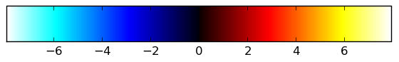

Group GLM for HCP fMRI LANGUAGE task
REPORTS ONLY WORK ON FIREFOX! Methods used scripts/hcp_preproc_and_analysis.py script, powered by nipy . Statistic images have been thresholded at Z>3.0 voxel-level.
View source code for script scripts/hcp_preproc_and_analysis.py """ :Synopsis: preprocessing and/or analysis of HCP task fMRI data :Author: DOHMATOB Elvis Dopgima """ import os import sys import re import glob import numpy as np import nibabel import commands from nipy.modalities.fmri.glm import FMRILinearModel from nipy.labs.mask import intersect_masks from pypreprocess.nipype_preproc_spm_utils import (SubjectData, _do_subject_realign, _do_subject_smooth, do_subject_preproc) from pypreprocess.io_utils import load_specific_vol from pypreprocess.fsl_to_nipy import (read_design_fsl_design_file, make_dmtx_from_timing_files, _insert_directory_in_file_name) from pypreprocess.reporting.glm_reporter import generate_subject_stats_report from pypreprocess.reporting.base_reporter import (ProgressReport, pretty_time) from joblib import Parallel, delayed, Memory def _do_fmri_distortion_correction(fmri_files, subject_data_dir, subject_output_dir, subject_id, task_id, # i'm unsure of the readout time, # but this is constant across both PE # directions and so can be scaled to 1 # (or any other nonzero float) readout_time=.01392, do_report=False ): """ Function to undistort task fMRI data for a given HCP subject. """ # prepare for smart caching mem = Memory(os.path.join(subject_output_dir, "cache_dir")) acq_params = [[1, 0, 0, readout_time], [-1, 0, 0, readout_time]] acq_params_file = os.path.join(subject_output_dir, "b0_acquisition_params.txt") np.savetxt(acq_params_file, acq_params, fmt='%f') fieldmap_files = [os.path.join( subject_data_dir, "unprocessed/3T/tfMRI_%s_%s/%s_3T_SpinEchoFieldMap_" "%s.nii.gz" % (task_id, direction, subject_id, direction)) for direction in ["LR", "RL"]] assert len(fieldmap_files) == 2 # fslroi zeroth_fieldmap_files = [] for fieldmap_file in fieldmap_files: if not os.path.isfile(fieldmap_file): print "Can't find fieldmap file %s; skipping subject %s" % ( fieldmap_file, subject_id) return # peel 0th volume of each fieldmap zeroth_fieldmap_file = os.path.join( subject_output_dir, "0th_%s" % os.path.basename( fieldmap_file)) fslroi_cmd = "fsl5.0-fslroi %s %s 0 1" % ( fieldmap_file, zeroth_fieldmap_file) print "\r\nExecuting %s ..." % fslroi_cmd print mem.cache(commands.getoutput)(fslroi_cmd) zeroth_fieldmap_files.append(zeroth_fieldmap_file) # merge the 0th volume of each fieldmap merged_zeroth_fieldmap_file = os.path.join( subject_output_dir, "merged_with_other_direction_%s" % ( os.path.basename(zeroth_fieldmap_files[0]))) fslmerge_cmd = "fsl5.0-fslmerge -t %s %s %s" % ( merged_zeroth_fieldmap_file, zeroth_fieldmap_files[0], zeroth_fieldmap_files[1]) print "\r\nExecuting %s ..." % fslmerge_cmd print mem.cache(commands.getoutput)(fslmerge_cmd) # do topup (learn distortion model) topup_results_basename = os.path.join(subject_output_dir, "topup_results") topup_cmd = ( "fsl5.0-topup --imain=%s --datain=%s --config=b02b0.cnf " "--out=%s" % (merged_zeroth_fieldmap_file, acq_params_file, topup_results_basename)) print "\r\nExecuting %s ..." % topup_cmd print mem.cache(commands.getoutput)(topup_cmd) # apply learn deformations to absorb distortion dc_fmri_files = [] realignment_parameters = [] sbref_files = [os.path.join(subject_data_dir, ("unprocessed/3T/tfMRI_%s_%s/%s_" "3T_tfMRI_%s_%s_SBRef.nii.gz") % ( task_id, direction, subject_id, task_id, direction)) for direction in ["LR", "RL"]] for index in xrange(2): # merge SBRef + task BOLD for current PE direction fourD_plus_sbref = os.path.join( subject_output_dir, "sbref_plus_" + os.path.basename( fmri_files[index])) fslmerge_cmd = "fsl5.0-fslmerge -t %s %s %s" % ( fourD_plus_sbref, sbref_files[index], fmri_files[index]) print "\r\nExecuting %s ..." % fslmerge_cmd print mem.cache(commands.getoutput)(fslmerge_cmd) # realign task BOLD to SBRef subject_data = _do_subject_realign(SubjectData( func=fourD_plus_sbref, output_dir=subject_output_dir), do_report=do_report ) rfourD_plus_sbref = subject_data.func realignment_parameters.append(np.loadtxt( getattr(subject_data, "realignment_parameters"))[1:, ...]) # apply topup to realigned images dc_rfourD_plus_sbref = os.path.join( subject_output_dir, "dc" + os.path.basename( rfourD_plus_sbref)) applytopup_cmd = ( "fsl5.0-applytopup --imain=%s --verbose --inindex=%i " "--topup=%s --out=%s --datain=%s --method=jac" % ( rfourD_plus_sbref, index + 1, topup_results_basename, dc_rfourD_plus_sbref, acq_params_file)) print "\r\nExecuting %s ..." % applytopup_cmd print mem.cache(commands.getoutput)(applytopup_cmd) # recover undistored task BOLD dc_rfmri_file = dc_rfourD_plus_sbref.replace("sbref_plus_", "") fslroi_cmd = "fsl5.0-fslroi %s %s 1 -1" % ( dc_rfourD_plus_sbref, dc_rfmri_file) print "\r\nExecuting %s ..." % fslroi_cmd print mem.cache(commands.getoutput)(fslroi_cmd) # sanity tricks if dc_rfmri_file.endswith(".nii"): dc_rfmri_file = dc_rfmri_file + ".gz" dc_fmri_files.append(dc_rfmri_file) return dc_fmri_files, realignment_parameters def run_suject_level1_glm(subject_data_dir, subject_output_dir, task_id, readout_time=.01392, # seconds tr=.72, do_preproc=False, do_realign=False, do_normalize=False, fwhm=0., do_report=False, hrf_model="Canonical with Derivative", drift_model="Cosine", hfcut=100, regress_motion=True, slicer='y', cut_coords=6, threshold=3., cluster_th=15 ): """ Function to do preproc + analysis for a single HCP subject (task fMRI) """ # sanitize subject data_dir subject_id = int(os.path.basename(subject_data_dir)) subject_data_dir = os.path.abspath(subject_data_dir) _subject_data_dir = os.path.join(subject_data_dir, "MNINonLinear/Results/") add_regs_files = None if do_preproc: if not os.path.exists(subject_output_dir): os.makedirs(subject_output_dir) # glob fmri files fmri_files = [os.path.join( subject_data_dir, "unprocessed/3T/tfMRI_%s_%s/%s_3T_tfMRI_%s_%s.nii.gz" % ( task_id, direction, subject_id, task_id, direction)) for direction in ["LR", "RL"]] assert len(fmri_files) == 2 # glob anat file anat_file = os.path.join(subject_data_dir, "T1w/T1w_acpc_dc_restore_brain.nii.gz") # assert os.path.isfile(anat_file) if not os.path.isfile(anat_file): anat_file = None # distortion correction ? dc_output = _do_fmri_distortion_correction( fmri_files, subject_data_dir, subject_output_dir, subject_id, task_id, readout_time=readout_time, do_report=do_report ) if dc_output is None: return else: fmri_files, realignment_parameters = dc_output # preprocess the data preproc_subject_data = do_subject_preproc(SubjectData( func=fmri_files, anat=anat_file, output_dir=subject_output_dir), do_realign=True, do_normalize=do_normalize, fwhm=fwhm, do_report=do_report ) fmri_files = preproc_subject_data.func n_motion_regressions = 6 if do_realign and regress_motion: add_regs_files = realignment_parameters else: n_motion_regressions = 12 # glob fmri files fmri_files = [] for direction in ['LR', 'RL']: fmri_file = os.path.join( _subject_data_dir, "tfMRI_%s_%s/tfMRI_%s_%s.nii.gz" % ( task_id, direction, task_id, direction)) if not os.path.isfile(fmri_file): print "Can't find task fMRI file %s; skipping subject %s" % ( fmri_file, subject_id) return else: fmri_files.append(fmri_file) # glob movement confounds if regress_motion: add_regs_files = [os.path.join(_subject_data_dir, "tfMRI_%s_%s" % ( task_id, direction), "Movement_Regressors.txt") for direction in ["LR", "RL"]] # smooth images if np.sum(fwhm) > 0: print "Smoothing fMRI data (fwhm = %s)..." % fwhm fmri_files = _do_subject_smooth(SubjectData( func=fmri_files, output_dir=subject_output_dir), fwhm=fwhm, do_report=False ).func print "... done.\r\n" # sanitize subject_output_dir if not os.path.exists(subject_output_dir): os.makedirs(subject_output_dir) # chronometry stats_start_time = pretty_time() # merged lists paradigms = [] frametimes_list = [] design_matrices = [] # fmri_files = [] n_scans = [] for direction, direction_index in zip(['LR', 'RL'], xrange(2)): # glob the design file design_file = os.path.join(_subject_data_dir, "tfMRI_%s_%s" % ( task_id, direction), "tfMRI_%s_%s_hp200_s4_level1.fsf" % ( task_id, direction)) if not os.path.isfile(design_file): print "Can't find design file %s; skipping subject %s" % ( design_file, subject_id) return # read the experimental setup print "Reading experimental setup from %s ..." % design_file fsl_condition_ids, timing_files, fsl_contrast_ids, contrast_values = \ read_design_fsl_design_file(design_file) print "... done.\r\n" # fix timing filenames timing_files = _insert_directory_in_file_name( timing_files, "tfMRI_%s_%s" % (task_id, direction), 1) # make design matrix print "Constructing design matrix for direction %s ..." % direction _n_scans = nibabel.load(fmri_files[direction_index]).shape[-1] n_scans.append(_n_scans) design_matrix, paradigm, frametimes = make_dmtx_from_timing_files( timing_files, fsl_condition_ids, n_scans=_n_scans, tr=tr, hrf_model=hrf_model, drift_model=drift_model, hfcut=hfcut, add_regs_file=add_regs_files[ direction_index] if not add_regs_files is None else None, add_reg_names=[ 'Translation along x axis', 'Translation along yaxis', 'Translation along z axis', 'Rotation along x axis', 'Rotation along y axis', 'Rotation along z axis', 'Differential Translation along x axis', 'Differential Translation along yaxis', 'Differential Translation along z axis', 'Differential Rotation along x axis', 'Differential Rotation along y axis', 'Differential Rotation along z axis' ][:n_motion_regressions] if not add_regs_files is None else None, ) print "... done." paradigms.append(paradigm) frametimes_list.append(frametimes) design_matrices.append(design_matrix) # convert contrasts to dict contrasts = dict((contrast_id, # append zeros to end of contrast to match design np.hstack((contrast_value, np.zeros(len( design_matrix.names) - len(contrast_value))))) for contrast_id, contrast_value in zip( fsl_contrast_ids, contrast_values)) # more interesting contrasts if task_id == 'MOTOR': contrasts['RH-LH'] = contrasts['RH'] - contrasts['LH'] contrasts['LH-RH'] = -contrasts['RH-LH'] contrasts['RF-LF'] = contrasts['RF'] - contrasts['LF'] contrasts['LF-RF'] = -contrasts['RF-LF'] contrasts['H'] = contrasts['RH'] + contrasts['LH'] contrasts['F'] = contrasts['RF'] + contrasts['LF'] contrasts['H-F'] = contrasts['RH'] + contrasts['LH'] - ( contrasts['RF'] - contrasts['LF']) contrasts['F-H'] = -contrasts['H-F'] # importat maps z_maps = {} effects_maps = {} # replicate contrasts across sessions contrasts = dict((cid, [cval] * 2) for cid, cval in contrasts.iteritems()) # compute effects mask_path = os.path.join(subject_output_dir, "mask.nii.gz") skip = os.path.isfile(mask_path) if skip: for contrast_id, contrast_val in contrasts.iteritems(): for map_type in ['z', 'effects']: map_dir = os.path.join( subject_output_dir, '%s_maps' % map_type) if not os.path.exists(map_dir): os.makedirs(map_dir) map_path = os.path.join( map_dir, '%s.nii.gz' % contrast_id) if not os.path.exists(map_path): skip = 0 break # collect zmaps for contrasts we're interested in if map_type == 'z': z_maps[contrast_id] = map_path if map_type == 'effects': effects_maps[contrast_id] = map_path if skip: print "Skipping subject %s..." % ( subject_id) # fit GLM if not skip: print ( 'Fitting a "Fixed Effect" GLM for merging LR and RL phase-encoding ' 'directions for subject %s ...' % subject_id) fmri_glm = FMRILinearModel(fmri_files, [design_matrix.matrix for design_matrix in design_matrices], mask='compute' ) fmri_glm.fit(do_scaling=True, model='ar1') print "... done.\r\n" # save computed mask mask_path = os.path.join(subject_output_dir, "mask.nii.gz") print "Saving mask image to %s ..." % mask_path nibabel.save(fmri_glm.mask, mask_path) print "... done.\r\n" # compute effects for contrast_id, contrast_val in contrasts.iteritems(): print "\tcontrast id: %s" % contrast_id z_map, eff_map = fmri_glm.contrast( contrast_val, con_id=contrast_id, output_z=True, output_effects=True ) # store stat maps to disk for map_type, out_map in zip(['z', 'effects'], [z_map, eff_map]): map_dir = os.path.join( subject_output_dir, '%s_maps' % map_type) if not os.path.exists(map_dir): os.makedirs(map_dir) map_path = os.path.join( map_dir, '%s.nii.gz' % contrast_id) print "\t\tWriting %s ..." % map_path nibabel.save(out_map, map_path) # collect zmaps for contrasts we're interested in if map_type == 'z': z_maps[contrast_id] = map_path if map_type == 'effects': effects_maps[contrast_id] = map_path # remove repeated contrasts contrasts = dict((cid, cval[0]) for cid, cval in contrasts.iteritems()) # do stats report if 0x0: anat_img = load_specific_vol(fmri_files[0], 0)[0] stats_report_filename = os.path.join(subject_output_dir, "reports", "report_stats.html") generate_subject_stats_report( stats_report_filename, contrasts, z_maps, nibabel.load(mask_path), anat=anat_img.get_data(), anat_affine=anat_img.get_affine(), threshold=threshold, cluster_th=cluster_th, slicer=slicer, cut_coords=cut_coords, design_matrices=design_matrices, subject_id=subject_id, start_time=stats_start_time, title="GLM for subject %s" % subject_id, # additional ``kwargs`` for more informative report TR=tr, n_scans=n_scans, hfcut=hfcut, drift_model=drift_model, hrf_model=hrf_model, paradigm={'LR': paradigms[0].__dict__, 'RL': paradigms[1].__dict__}, frametimes={'LR': frametimes_list[0], 'RL': frametimes_list[1]}, fwhm=fwhm ) ProgressReport().finish_dir(subject_output_dir) print "\r\nStatistic report written to %s\r\n" % stats_report_filename return contrasts, effects_maps, z_maps, mask_path if __name__ == '__main__': ########################################################################### # CONFIGURATION n_jobs = int(os.environ.get('N_JOBS', -1)) n_subjects = int(os.environ.get('N_SUBJECTS', -1)) subject_ids = os.environ.get('SUBJECT_IDS', None) subject_ids = subject_ids.split(",") if not subject_ids is None else None task_ids = os.environ.get('TASK_IDS', ",".join(('WM', 'MOTOR,' 'LANGUAGE,' 'EMOTION,' 'GAMBLING,' 'RELATIONAL,' 'SOCIAL' ))).split(',') do_preproc = os.environ.get("PREPROC", False) do_normalize = os.environ.get("NORMALIZE", False) and do_preproc fwhm = np.fromstring(os.environ.get("fwhm", "0."), sep=",") slicer = 'z' # slicer of activation maps QA cut_coords = 5 threshold = 3. cluster_th = 15 # minimum number of voxels in reported clusters ########################################################################### # DIRECTORIES data_dir = "/media/HCP-Q2/" if len(sys.argv) > 1: data_dir = sys.argv[1] assert os.path.isdir(data_dir), ( "data_dir '%s' doesn't exist") % data_dir output_dir = "/volatile/home/edohmato/connectome_output" if len(sys.argv) > 2: output_dir = sys.argv[2] if do_preproc: output_dir = os.path.join(output_dir, "custom_preproc") else: output_dir = os.path.join(output_dir, "hcp_preproc") if not os.path.exists(output_dir): os.makedirs(output_dir) ########################################################################### # DATA GRABBING def _subject_factory(task_output_dir, n_subjects=-1): """ Generator for subject data. Returns ------- subject_data_dir: string existing directory; directory containing subject data subject_output_dir: string output directory for subject GLM """ for subject_data_dir in sorted(glob.glob(os.path.join( data_dir, "******"))): if n_subjects == 0: return else: n_subjects -= 1 # is this a subject data dir ? if not (re.match("^.+?[0-9]{6}\/?$", subject_data_dir) and os.path.isdir(subject_data_dir)): continue subject_id = os.path.basename(subject_data_dir) # if os.path.isfile(os.path.join(output_dir, task_id, subject_id, # "z_maps/LH-RH.nii.gz")): # continue if os.path.exists(os.path.join( output_dir, "%s/z_maps/LH-RH.nii.gz" % subject_id)): continue # exclude this subject ? if not subject_ids is None and not subject_id in subject_ids: print "Skipping %s ..." % subject_id continue subject_output_dir = os.path.join(task_output_dir, subject_id) yield subject_data_dir, subject_output_dir ########################################################################### # MAIN LOOP def _run_suject_level1_glm(subject_data_dir, subject_output_dir, **kwargs): """ Just another wrapper. """ mem = Memory(os.path.join(subject_output_dir, "cache_dir")) return mem.cache(run_suject_level1_glm)(subject_data_dir, subject_output_dir, **kwargs) for task_id in task_ids: try: # best slicer for given task if task_id == "MOTOR": slicer = 'y' # task output dir task_output_dir = os.path.join(output_dir, task_id) # chronometry stats_start_time = pretty_time() # run intra-subject GLM and collect the results group-level GLM group_glm_inputs = [subject_glm_results for subject_glm_results in Parallel( n_jobs=n_jobs, verbose=100)(delayed(run_suject_level1_glm)( subject_data_dir, subject_output_dir, task_id=task_id, do_preproc=do_preproc, do_normalize=do_normalize, fwhm=fwhm, regress_motion=True, slicer=slicer, cut_coords=cut_coords, threshold=threshold, cluster_th=cluster_th ) for subject_data_dir, subject_output_dir in _subject_factory( task_output_dir, n_subjects=n_subjects)) if not subject_glm_results is None] ####################################################################### # GROUP ANALYSIS BEGINS if not do_preproc or (do_preproc and do_normalize): # compute group mask print "\r\nComputing group mask ..." mask_images = [subject_glm_results[3] for subject_glm_results in group_glm_inputs] group_mask = nibabel.Nifti1Image(intersect_masks(mask_images ).astype(np.uint8), nibabel.load(mask_images[0] ).get_affine()) print "... done.\r\n" print "Group GLM" contrasts = [ subject_glm_results for subject_glm_results in group_glm_inputs] contrasts = group_glm_inputs[0][0] sujects_effects_maps = [subject_glm_results[1] for subject_glm_results in group_glm_inputs] group_level_z_maps = {} design_matrix = np.ones(len(sujects_effects_maps) )[:, np.newaxis] # only the intercept for contrast_id in contrasts: print "\tcontrast id: %s" % contrast_id # effects maps will be the input to the second level GLM first_level_image = nibabel.concat_images( [x[contrast_id] for x in sujects_effects_maps]) # fit 2nd level GLM for given contrast group_model = FMRILinearModel(first_level_image, design_matrix, group_mask) group_model.fit(do_scaling=False, model='ols') # specify and estimate the contrast contrast_val = np.array(([[1.]]) ) # the only possible contrast ! z_map, = group_model.contrast( contrast_val, con_id='one_sample %s' % contrast_id, output_z=True) # save map map_dir = os.path.join(task_output_dir, 'z_maps') if not os.path.exists(map_dir): os.makedirs(map_dir) map_path = os.path.join(map_dir, '2nd_level_%s.nii.gz' % ( contrast_id)) print "\t\tWriting %s ..." % map_path nibabel.save(z_map, map_path) group_level_z_maps[contrast_id] = map_path # do stats report stats_report_filename = os.path.join(task_output_dir, "reports", "report_stats.html") generate_subject_stats_report( stats_report_filename, contrasts, group_level_z_maps, group_mask, threshold=threshold, cluster_th=cluster_th, design_matrices=[design_matrix], subject_id="sub001", start_time=stats_start_time, title='Group GLM for HCP fMRI %s task' % task_id, slicer=slicer, cut_coords=cut_coords ) ProgressReport().finish_dir(task_output_dir) print "\r\nStatistic report written to %s\r\n" % ( stats_report_filename) except Exception, e: print e
Russel A. Poldrack et al. Handbook of Functional MRI Data Analysis
F. Gregory Ashby. Statistical Analysis of fMRI Data
Experimental design contrasts: MATH-STORY: [1.0, 0.0, -1.0, 0.0, 0.0, 0.0, 0.0, 0.0, 0.0, 0.0, 0.0, 0.0, 0.0, 0.0, 0.0, 0.0, 0.0, 0.0, 0.0, 0.0, 0.0] neg_STORY: [0.0, 0.0, -1.0, 0.0, 0.0, 0.0, 0.0, 0.0, 0.0, 0.0, 0.0, 0.0, 0.0, 0.0, 0.0, 0.0, 0.0, 0.0, 0.0, 0.0, 0.0] STORY: [0.0, 0.0, 1.0, 0.0, 0.0, 0.0, 0.0, 0.0, 0.0, 0.0, 0.0, 0.0, 0.0, 0.0, 0.0, 0.0, 0.0, 0.0, 0.0, 0.0, 0.0] STORY-MATH: [-1.0, 0.0, 1.0, 0.0, 0.0, 0.0, 0.0, 0.0, 0.0, 0.0, 0.0, 0.0, 0.0, 0.0, 0.0, 0.0, 0.0, 0.0, 0.0, 0.0, 0.0] MATH: [1.0, 0.0, 0.0, 0.0, 0.0, 0.0, 0.0, 0.0, 0.0, 0.0, 0.0, 0.0, 0.0, 0.0, 0.0, 0.0, 0.0, 0.0, 0.0, 0.0, 0.0] neg_MATH: [-1.0, 0.0, 0.0, 0.0, 0.0, 0.0, 0.0, 0.0, 0.0, 0.0, 0.0, 0.0, 0.0, 0.0, 0.0, 0.0, 0.0, 0.0, 0.0, 0.0, 0.0]
Thresholded activation maps (threshold = 3.0) cmap = "cold_hot" ) for the different contrasts of interest. Click on a thumbnail for more details.